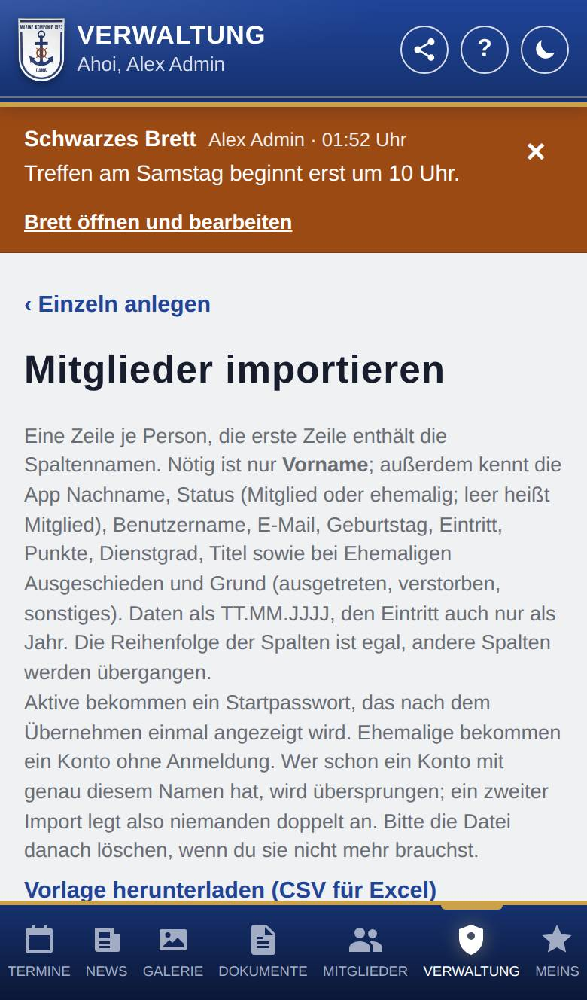

Mitglieder importieren
Gibt es schon eine Mitgliederliste, z. B. in Excel, übernimmst du hier alle auf einmal – auf Wunsch auch Anwärter und Ehemalige. Danach stehen die Zugangsdaten aller neuen Konten auf einer Seite.

So öffnest du die Seite
Tippe unten auf Verwaltung, dann auf Mitglieder, auf + Mitglied anlegen und oben auf Aus Datei importieren (Excel oder CSV). Derselbe Schritt kommt auch in der Einrichtung der App.
Was du hier siehst
- ‹ Einzeln anlegen: zurück zum Formular für eine Person.
- Vorlage herunterladen (CSV für Excel): eine Tabelle mit allen Spalten und Beispielen.
- Datei wählen (Excel .xlsx oder CSV).
- Oder Tabelle einfügen (z. B. aus Excel kopiert): ein Feld für kopierte Zellen. Nach dem Wählen einer Datei steht dort ihr Inhalt.
- Vorschau und, nach der Vorschau, Übernehmen.
So gehst du vor
Eine Liste importieren
- Tippe auf Vorlage herunterladen (CSV für Excel) und trage deine Mitglieder dort ein – oder nimm deine eigene Tabelle. Die erste Zeile enthält die Spaltennamen.
- Wähle die Datei aus oder kopiere die Zellen ins Feld.
- Tippe auf Vorschau. Sie zeigt jede Zeile mit dem, was die App verstanden hat, und Fehler je Zeile.
- Korrigiere Fehler in der Datei und wähle sie erneut.
- Hat keine Zeile einen Fehler, tippe auf Übernehmen.
- Drucke die Zugangsdaten aus oder kopiere sie, und gib sie persönlich weiter.
Gut zu wissen
- Nötig ist nur die Spalte Vorname. Die App kennt außerdem: Nachname (auch „Name“), Status (auch „Rolle“), Benutzername, E-Mail, Geburtstag, Eintritt, Punkte, Dienstgrad, Titel sowie bei Ehemaligen Ausgeschieden und Grund. Reihenfolge der Spalten sowie Groß- und Kleinschreibung sind egal.
- Status: leer oder Mitglied, eine andere Rolle, die sich beim Anlegen wählen lässt (z. B. Anwärter), oder ehemalig.
- Geburtstag als TT.MM.JJJJ oder ohne Jahr TT.MM. (nur mit Geburtstage); Eintritt als TT.MM.JJJJ oder nur das Jahr, bei Ehemaligen auch „Gründer“; Grund: ausgetreten, verstorben oder sonstiges.
- Punkte, Dienstgrad und Titel (mehrere mit Komma getrennt) übernimmt die App nur für Rollen mit Mitgliederbereich und nur, wenn du sie vergeben darfst. Dienstgrad und Titel müssen in der App schon angelegt sein.
- Andere Spalten (z. B. Telefon) übergeht die App und nennt sie in der Vorschau, ebenso Spalten zu Bereichen, die die Kompanie nicht nutzt.
- Ältere Excel-Dateien (.xls) speicherst du vorher als .xlsx; die App liest das erste Tabellenblatt.
- Wer schon ein Konto mit genau diesem Vor- und Nachnamen hat, wird übersprungen; ein zweiter Import derselben Datei legt also niemanden doppelt an. Zwei Personen mit gleichem Namen in der Datei sind ein Fehler: Mach sie unterscheidbar, z. B. mit „I“ und „II“ am Nachnamen.
- Höchstens 500 Personen auf einmal. Fotos trägst du danach einzeln auf der Seite jedes Mitglieds nach.
- Die Startpasswörter stehen nur dieses eine Mal da. Ehemalige bekommen ein Konto ohne Anmeldung (siehe Ehemalige).
- Die Datei enthält persönliche Daten: Lösche sie nach dem Import, wenn du sie nicht mehr brauchst.